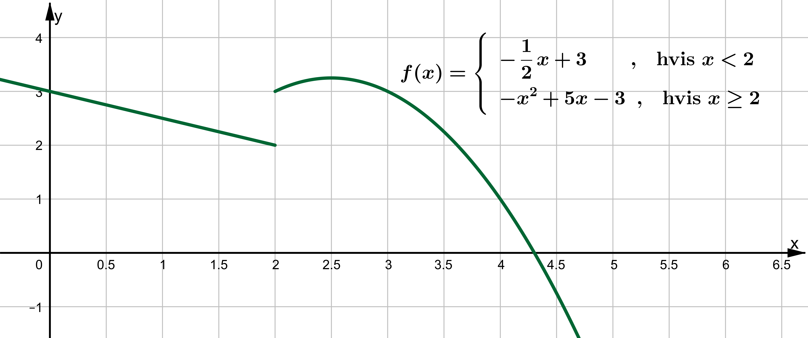
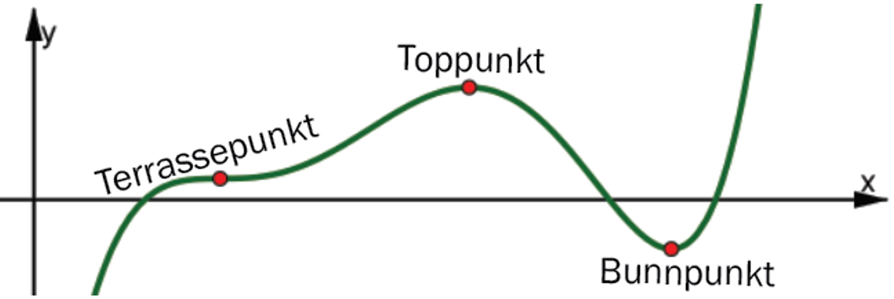
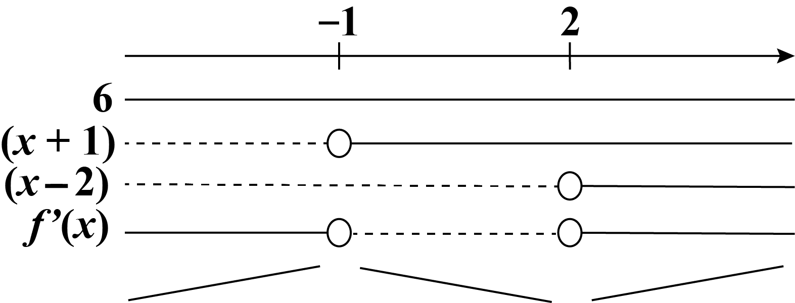
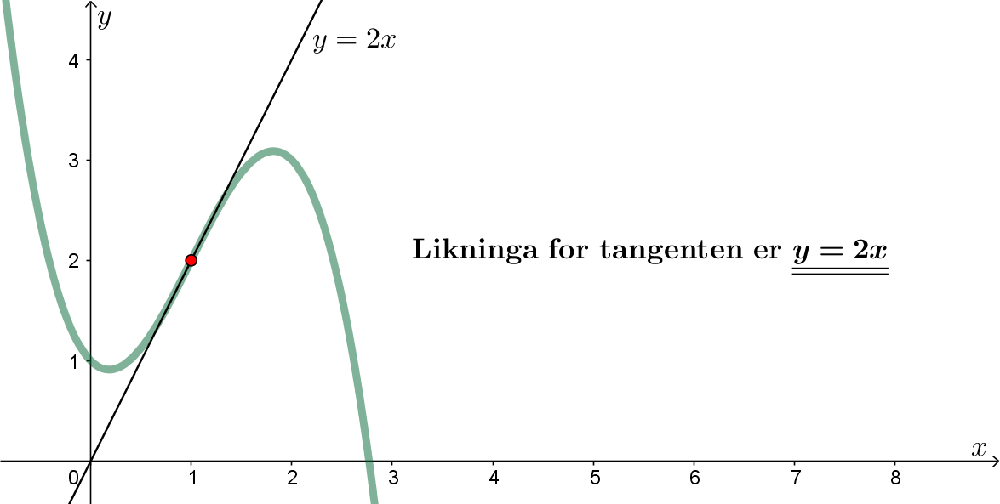

Funksjonsdrøfting
Du skal ha kompetanse om
- funksjoner med delt forskrift
- grenseverdier
- funksjoner med asymptoter
- vekstfart og derivasjon
- numerisk derivasjon (med Python)
- kontinuitet og deriverbarhet
- tangenter
- ekstremal- og terrassepunkter
- vendepunkter
Funksjoner med delt forskrift
Eksempel

Funksjonen har et delingspunkt når \(x\) = 2.
Når vi nærmer oss punktet nedenfra er funksjonsverdien gitt ved
\[ \lim_{x \rightarrow 2^{-}} f(x) = 2 \]Når vi nærmer oss punktet ovenfra er funksjonsverdien gitt ved
\[ \lim_{x \rightarrow 2^{+}} f(x) = f(2) = 3 \]Det finnes mange praktiske situasjoner hvor det er aktuelt å bruke funksjoner med delt forskrift, f.eks. i forbindelse med økonomi eller i fysikk.
Eksempel
Skisse av høydefunksjonen til en ball som spretter:

Hver gang ballen treffer bakken får funksjonen et delingspunkt.
Grenseverdier
Eksempel
\[ \begin{aligned} &\lim_{x \rightarrow 3} \left( x + 2 \right) = 3 + 2 = 5\\[1em] &\lim_{x \rightarrow 2} \frac{x^2 - 4}{x-2} = \lim_{x \rightarrow 2} \frac{(x-2)(x+2)}{x-2} = \lim_{x \rightarrow 2} (x+2) = 2 + 2 = 4\\[1em] &\lim_{x \rightarrow 2} \frac{1}{x-2} \rightarrow \pm \infty \;\text{ (grensen eksisterer ikke)}\\ &\lim_{x \rightarrow 2^{+}} \frac{1}{x-2} \rightarrow \infty\\ &\lim_{x \rightarrow 2^{-}} \frac{1}{x-2} \rightarrow -\infty\\ &\lim_{x \rightarrow 2^{-}} \frac{1}{2-x} \rightarrow \infty\\ &\lim_{x \rightarrow \infty} \frac{1}{x-2} = 0 \\ &\lim_{x \rightarrow \infty} \frac{x}{e^x} = 0 \; \text{ (fordi }x \ll e^{x}\text{ når }x \rightarrow \infty\text{)}\\ &\lim_{x \rightarrow \infty} \frac{e^x}{x} \rightarrow \infty \; \text{ (fordi }x \ll e^{x}\text{ når }x \rightarrow \infty\text{)}\\ &\lim_{x \rightarrow \infty} \frac{\ln x}{x} = 0 \; \text{ (fordi }\ln x \ll x\text{ når }x \rightarrow \infty\text{)} \end{aligned} \]L'Hôpital
Dersom
\[ \lim_{x \rightarrow a} f(x) = 0 \;\; \text{ og } \;\; \lim_{x \rightarrow a} g(x) = 0 \]eller
\[ \lim_{x \rightarrow a} f(x) \rightarrow \pm \infty \;\; \text{ og } \;\; \lim_{x \rightarrow a} g(x) \rightarrow \pm \infty \]kan vi derivere teller og nevner (hver for seg):
\[ \lim_{x \rightarrow a} \frac{f(x)}{g(x)} = \lim_{x \rightarrow a} \frac{f'(x)}{g'(x)} \]Eksempel
\[\lim_{x \rightarrow 2} \frac{x^3 - 8}{x^2 - 4} = \lim_{x \rightarrow 2} \frac{3x^2}{2x} = \frac{3\cdot 2^2}{2\cdot 2} = 3\]Funksjoner med asymptoter
En rasjonal funksjon er en funksjon der både teller og nevner er en polynomfunksjon.

Asymptoter
Hvis en rasjonal funksjon har en horisontal (vannrett) asymptote er den gitt ved
\[ y = \lim_{x \rightarrow \infty} f(x) \]Hvis en rasjonal funksjon har en vertikal (loddrett) asymptote er den gitt ved \(x\) = nullpunktet til nevneren.
Eksempel
Bestem den horisontale og vertikale asymptoten til funksjonen
\[ f(x) = \frac{4x - 8}{x + 3} \]Vi bruker L'Hôpitals regel for å finne den horisontale:
\[ y = \lim_{x \rightarrow \infty} \frac{4x - 8}{x + 3} = \lim_{x \rightarrow \infty} \frac{4}{1} = 4 \;\text{ altså }\; \underline{y = 4}\]Den vertikale asymtoten er gitt ved
\[ x + 3 = 0 \;\; \text{altså} \;\; \underline{x = -3} \]Kontinuitet
Kontinuerlige funksjoner er funksjoner som ikke "hopper" i definisjonsområdet; Funksjoner vi kan tegne innenfor definisjonsområdet uten å løfte pennen fra arket.
Eksempel
Bestem \(a\) slik at funksjonen nedenfor blir kontinuerlig.

Uttrykkene for \(f(x)\) må være like i delingspunktet:
\[\begin{aligned}(2\cdot 1 - 1)^2 &= \sqrt{1} + a \\ 1 &= 1 + a \\ a &= 0\end{aligned}\]
Derivasjon
Vekstfart
Gjennomsnittlig vekstfarten mellom \((a, f(a))\) og \((b, f(b))\) er
\[ \frac{\Delta y}{\Delta x} = \frac{f(b) - f(a)}{b - a} \]Momentan vekstfart i et punkt \((a, f(a))\) er definert som
\[ f'(a) = \lim_{h \rightarrow 0} \frac{f(a+h) - f(a)}{h} = \lim_{h \rightarrow 0} \frac{f(a) - f(a-h)}{h} \]Den momentane vekstfarten kalles den deriverte i punktet.
Eksempel
\[ f(x) = x^2 -3x \]Hva er gjennomsnittlig vekstfart mellom \((1, f(1))\) og \((3, f(3))\)?
Hva er momentan vekstfart når \(x=1\)?

Momentan vekstfart:
\[\begin{aligned} \lim_{h \rightarrow 0} \frac{f(1+h)-f(1)}{h} &= \lim_{h \rightarrow 0} \frac{\left( (1+h)^2 - 3(h+1) \right) - (-2)}{h}\\ &= \lim_{h \rightarrow 0} \frac{1+2h+h^2 - 3h - 3 + 2}{h}\\ &= \lim_{h \rightarrow 0} \frac{h^2 - h}{h} = \lim_{h \rightarrow 0} (h - 1) = - 1 \end{aligned}\]Derivasjon
\[ f'(x) = \lim_{h \rightarrow 0} \frac{f(x+h) - f(x)}{h}\]Eksempel
Bruk definisjonen til å vise at \(f'(x)=2x-3\) når \(f(x)=x^2-3x\).
Derivasjonsregler
\[\begin{aligned} \left( a \cdot x^n \right)' &= a\cdot n \cdot x^{n-1} \\ \left( \ln \, x \right)' &= \frac{1}{x} \\ \left( e^x \right)' &= e^x \end{aligned}\]Eksempel
\[\begin{aligned} \left( x^2 - 3x \right)' &= 2x - 3 \\ \left( 5x^3 + 3x + 42 \right)' &= 15x^2 + 3 \\ \left( x^2 + 3\ln(x) \right)' &= 2x + \frac{3}{x} \\ \left( 5e^x + 3x \right)' &= 5e^x + 3 \end{aligned}\]Tangenter
Tangenten til en graf i et punkt \((x_0, f(x_0))\) er en rett linje
\[ y = ax + b \]som tangerer ("toucher") grafen i punktet.
Stigningstallet til tangente er \(a=f'(x_0)\) og konstantleddet \(b\) finner vi ved å løse likningen
\[ f(x_0) = a \cdot x_0 + b \]Eksempel
Bestem likningen til tangenten i punktet \((2, f(2))\) for funksjonen
\[ f(x) = -x^3 + 3x^2 - x + 1 \]Den deriverte gir
\[ f'(x) = -3x^2 + 6x - 1 \; \rightarrow \; \underline{a = f'(2)} = -3\cdot 2^2 + 6\cdot 2 - 1 = \underline{-1} \]Likningen er dermed
\[ y = -x+b \]hvor konstantleddet \(b\) er gitt ved
\[\begin{aligned}y &= -x+b\\f(-2)&=-(-2)+b\\3&=-2+b\\b&=5\end{aligned}\]Dermed er tangenten
\[ \underline{y=-x+5} \]Deriverbarhet
Deriverbarhet
Et delt funksjonsuttrykk er deriverbart i delingspunktet hvis funksjonen er kontinuerlig og hvis stigningstallet er det samme på begge sider av delingspunktet.
Eksempel
Bestem \(a\) og \(b\) slik at funksjonen blir deriverbar i delingspunktet.

For at stigningstallet skal være det samme må
\[\begin{aligned}(ax+b)' &= \left(\frac{x^2}{2}\right)'\\a&=x\\a&=2\end{aligned}\]For at funksjonen skal være kontinuerlig må
\[\begin{aligned}2x+b&=\frac{x^2}{2}\\2\cdot2+b&=\frac{2^2}{2}\\b&=2\end{aligned}\]Ekstremal- og terrassepunkter

Monotoniegenskaper
Når grafen til en funksjonen stiger og når den synker.
Eksempel
Bestem monotoniegenskapene og ekstremalpunktene til funksjonen
\[ f(x) = 2x^3 - 3x^2 - 12x + 6 \]Vi lager fortegnsskjema for den deriverte;
\[\begin{aligned}f'(x)&=0\\6x^2-6x-12&=0\\6\cdot(x^2-x-2)&=0\\6\cdot(x+1)(x-2)&=0\end{aligned}\]
Monotoniegenskaper:
Vokser når \(x<-1\) og når \(x>2\), og synker når \(-1<x<2\).
Toppunkt: \((-1,f(-1))=(-1,13)\)
Bunnpunkt: \((2,f(2))=(2,-14)\)
Vendepunkter
Vendepunkt
Ekstremalpunktet til den deriverte; \(f''(x)=0\).
Eksempel
\[ f(x) = -x^3 + 3x^2 - x + 1 \]Bestem vendepunktet.
Grafen har altså et vendepunkt i \((1,2)\).
Eksempel
Bestem vendetangenten til funksjonen i forrige eksempel.
Stigningstallet er \(a=f'(1)=-3+6-1=2\).
Når \(x=1\) så er \(y=2\), som gir
\[\begin{aligned}y&=2x+b\\2&=2\cdot1+b\;\;\;\rightarrow\;\;\;b=0\end{aligned}\]Dermed er tangenten \(y=2x\).
